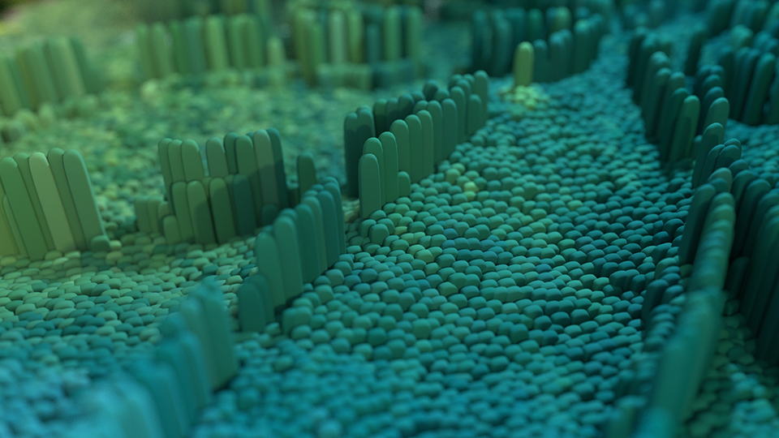

Kristina Sara Johnson
Computer scientist, CG artist, animator, musician (harp, viola da gamba, medieval fiddle).
Some code examples
Boids - flocking algorithm
Dendrogram matrix - visualise small hierarchies of categories
Hilbert curves from L-systems
Quadratic Koch curves from L-systems
Draw precise spirographs
More examples on GitHub
Publications
Vibration analysis of planet gear bore-rim failure using enhanced planet time synchronous averaging
Animated film to accompany the above paper
Animation demo reel
Music
Gabriel Pierne, Impromptu-Caprice op. 9
Ralph Vaughan Williams, The Lark Ascending
Contact
ksj.animator@gmail.com
